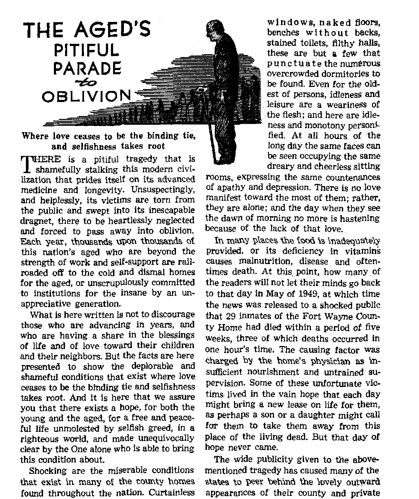

JULY 22, 1951 SEMIMONTHLY
THE MISSION OF THIS JOURNAL
News source? that are able to keep you awaka to the vital Issues of our times must be unfettered by censorship and selfish interests, “Awafc^f" has no fetters, it recodnizee foots, faces facta, Is free to publish facts. It Is not bound by political ambitions or obligations; it is unhampered by advertisers whose toes must not be trodden on; it is unprejudiced by traditional creeds. This journal keeps itself free that it may speak freely io you. But It docs not abuse its freedom. It maintains integrity to truth.
"Awake I” uses the regular news channels, but Is not dependent on them. Its own correspondents are on all continents, in scores of nations. From the four corners of the earth their uncensored, on-the-scenes reports come to you through these columns. This Journal’s viewpoint is not narrow, but is international. It is read in many nations^in many languages, by persons of all ages. Through its^ pages many fields of knowledge pass in review—government, commerce, religion, history, geography, science, social conditions, natural wonders—why, its coverage is as broad as the earth and as high as the heavens*
“Awake 1” pledges itself to righteous principles, to exposing hidden foes and subtle dangers, to championing freedom for all, to comforting mourners and strengthening those disheartened by the failures of a delinquent world, reflecting sure hope for the establishment of a righteous New World.
Get acquainted with “Awake!” Keep awake by reading “Awake!”
Publisii*i> semimonthly By Watchtower Bible AND TRACT SOCIETY. INC.
117 Ad&ms Street
N. H. Knorr, President
Printing this Issue; 870,000
Languages In wM«h the wiagaiio* h imbllihsd:
Semiiwnthly—Afrikaans. English. Finnish, Orman, Nnrireflan, Spanish. Monthly—Danish, French, Greek, PMujuese, Swedish, Li&rainian.
Offices. Tetrly subscrlptlnn iUt*
America. U.S., LIT Adams St, Brooklyn 1, N.Y. |1
Australia, n Romford Rd., sirnthheld, N.S.HV. Su Canada, +0 Irwin Ave., Toronto 5, Ontario JI England. 34 Craven Terrace. London, W. 2 7 s
South Africa. 023 Radon House, Cape Town 7s
Entered M wcond-claai nutter at Brcrtklyn. N. T.
Brooklyn 1, N. Y., U. S. A.
Grant Suiter. Secretory
Five cents a copy
RcmlttnncM should be sent to office in y&uj- muu-try in fjompliance with regiilatinns tn Guarantee safe delivery ar money. Remittances are acwjpteil at Brooklyn from cetin tries where no fllBce is located, by IntematlMial money ojder only. Subscription rata In different cf>um tries are here slated in IwAl currency. Notice tA expiration (with renewal blank) Is pent Jeaat (wo hsw*g before subscription «• plres. Change of address when sent to our office may be eirected effective within one month. Send your old m well as new addrtu.
Art of Mirth 3, 1879. Printed In U, g. A
CONTENTS
Hero Worship Spins a Modern Web
Plant Life Wages Chemical Warfare
The Aged’s Pitiful Parade to Oblivion
The Coconut Palm—Trade-Mark of
Vicar Praises God, Passes Tobacco
Peace Plan—“Out of the Mouth of Babes” 24
"Your Word Is Truth”
“Now it is high time to awake.”— Romans 13:11 &
Volume XXXII•Brooklyn, N. Y., July 22, 1^91 “ " ' N urn bar 14
HERO WORSHIP SPINS A MODERN WEB
THE age of atoms, like the age of chivalry, produces its heroes. Is it better fitted, though, to view them with greater reason and less emotion? This April’s press coverage of the return home of General of the Army Douglas MacArthur gives answer. The controversial political issues involved with the general’s removal from command have received abundant coverage. The concern here is rather with the pomp and adoration that swept the country. Did the nation weigh the matter with intellectual reserve? No, but emotion ruled as never before, and modem accessories such as television only contributed their bit to the mad whirl.
San Francisco, Washington, New York and Chicago quickly set smashing records in welcoming the hero of the Pacific. New York alone poured out seven and a half million people and 3,249 tons of confetti. But the decor of the people more than the size of the crowds provokes mention of the "hero-worship” issue. Like a web it grew in a wave of emotion that followed MacArthur’s plane from Tokyo to Wall Street With each stop the sentiment mounted.
Religions of East and West drew to common ground in the general’s reflected glory. 100,000 of Japan’s Shinto-dominated people cried “Banzai! [May you live a thousand years]” as he left Tokyo. On New York’s Fifth Avenue, Cardinal Spellman welcomed him back to the great American metropolis. Protestant protests, however, forced a change in the later Loyalty Day Parade in which the cardinal was to have ridden in MacArthur’s car.
The whole matter is the more vital since America is the most powerful champion for the Western world in the field with global communism. Thus her actions paralleled with her professions of Christianity receive constant observation. In answer to a query in San Francisco, General MacArthur said: “The only politics I have is contained in a simple phrase known by all of you—God bless America” Both the nation and the general, then, claim God’s side and petition his help. It would seem proper, therefore, to measure their actions with God’s Word. As a powerful reminder, that Word says: “For all the gods of the peoples are idols; but Jehovah made the heavens.” (Psalm 96:5t AS) All claiming to serve the true God are bound to recognize this truth. Whether out of alarm for this principle or for other reasons, one foreign observer, Grattan O’Leary, associate editor of the Ottawa Journal (Canada), said, in his column of April 20:
“What went on in Washington when MacArthur came had to be seen to be believed: For seeing it, an all but frightening manifestation of the fuehrer complex, it was almost impossible to think that such idolatrous hero-worship could take place on this continent in our day. This was not ths mere acclaim deserved by a great soldier: its frenzied emotionalism was more like tribal worship of some god.”
“Tribal worship of some gad.r> The International News Service correspondent reporting the San Francisco welcome as quoted in the Los Angeles Examiner thoughtfully inserted a qualifying term in describing the bay city’s “almost idolatrous host of people” that turned out for the long-absent general. If MacArthur objected to any of the customs bordering on “tribal worship” or the like, the press failed to record his feelings. To the contrary, speaking of General MacArthur’s ego, the New York Times said, on April 23:
“This ego and this power are perhaps best illustrated by a remark a worried president made shortly after he had decided to relieve MacArthur: ‘Well, I guess I have to relieve God!7 The president was in no sense blasphemous, he was merely repeating an appellation used to describe MacArthur many times—by some in sarcasm, by a few in almost complete sincerity.”
Louis B. Mayer, vice-president in charge of production for Metro-Goldwyn-Mayer Studios, put himself in the latter class when, on April 18, he said, “I have known General MacArthur for 30 years and I have respected him during all of those years. Now I have reverence for him.”
Apparently Mr. Mayer is but one of many. However, their numbers do not make the hero devotees right. In the Bible’s only use of the word “reverend” it is applied exclusively to Almighty God. Psalm 111:9 states: “He sent redemption unto his people: he hath commanded his covenant for ever: holy and reverend is his name.”
Are we to believe the modem hero worshipers would match their candidates in competition with the Most High God, **whose name alone is Jehovah”? (Psalm
83:18) The Baal priests of old tried that and spent the day crying in vain to a deaf god while the prophet Elijah taunted them: “Shout, . . . for he is a god! He is musing, or away on business, or perhaps he is asleep and must be wakened!” (1 Kings 18:24-40, Moff.) Well to remember that human heroes while alive are limited by the same frailties of the flesh as others, and when dead are just as deaf and asleep as any. Even the artificial glory of their triumphant moments fades soon after the shouts of the crowd have died away.
Facing the problem realistically, the New York Times, of April 23, analytically saw in the general’s unprecedented ovation a strong trend toward greater military influence in politics. Public criticism of his president by a military man speaking from Capitol Hill would have been unthinkable in decades past, the paper declared. The Times likewise called attention to MacArthur’s oratorical powers and “flair for the dramatic”, both appealing to public sentiment, and offered these as added reasons for his magic spell effect. Who will deny that both qualities took telling effect during the general's address to Congress when he described himself as an ‘old soldier fading away’? But both can also be dangerous traits. Prompting mob hysteria, they dull common sense and defeat logic and reason when unbridled.
The wise will consult history for some justification of hero worship before becoming its latest victims. They will note that for the glory-seeking conquerors, the Nebuchadnezzars, Alexanders, Caesars, Napoleons, Hitlers, etc., the old rule applied : "Whatever goes up must come down. But obviously the old world has not learned the lesson. Jesus Christ predicted for this day the multiplying of global armies and that this would avail nothing despite the heroes that militarism brings forth. (Matthew 24:7) If the web is spreading even now and the MacArthur case does indeed indicate a trend to all-out militarism,* those who forget the Creator would do well to note the shortcomings of creature man. He has no life in himself; how much less his own creations of bayonets and bombers. Yet to men and their works goes the praise of this “brain age”.
“Although asserting they were wise, they became foolish and turned the glory of the incorruptible God into something like the .image of corruptible man and of birds and four-footed creatures and creeping things . . , even those who exchanged the truth of God for the lie and venerated and rendered sacred service to the creation rather than the One who created, who is blessed forever.”—Romans 1:22,23,25, New World Trans,
TW° WORLDS
were trying to piece together a statement of words that would bolster the morale of the people and give them courage to fight on. What they composed that day of August 14, 1941, there on the deck of the American cruiser “Augusta”, became known as the Atlantic Charter.
TWO men sat on the deck. One held his cigarette lighter between his fingers when he talked. The other man talked with a fat cigar clamped down in the corner of his mouth. The ship’s crew was holding a death watch on the North Atlantic. German planes and submarines hovered on every horizon. Convoys nosing east, loaded with guns, planes and bombs, were being sent to the bottom by torpedoes.
The cigar smoker had come from a London whpse skies knew nothing but the dreary regularity of bombs, tragedy and death. His companion had just left a Washington where gloomy political prophets were wondering if August 1941 were about the limit of Russia’s endurance against Nazi Germany and if now was the time for America to plunge to the rescue of the world.
In this atmosphere the men talking on the deck, Mr. Roosevelt and Mr. Churchill,
Among the Charter’s eight points, the signal aspiration, the Sixth Point, declared their two countries “hope to see established a peace which will afford all nations the means of dwelling in safety within their own boundaries”.
Nothing short of an international organization exercising authority world-wide could bring the envisioned peace and security, they felt certain. The language of the Atlantic Charter implied that, when the Nazi tyranny should be crushed, some great world alliance would be inevitable.
Five months later, on New Year’s Day of January 1942, four men sat down in a conference room in the White House and penned their names to a short document typed out on four sheets of gilt-edged stationery. The signers were Roosevelt of the United States, Churchill of Great Britain, Litvinov of Soviet Russia, and Soong of
Nationalist China. Next day, while Mao Arthur evacuated Manila and the Japs marched In, representatives from twenty-two other nations trooped into the State Department office to add their signatures to the paper.
That document marked a high point in world history, jn more than one way. It marked a departure of the United States from an isolationist policy that dated back to President Washington. Now the United States was committed by alliance with other world powers. And, too, the document marked the birth of the United Nations-
The signatory nations joined therewith to “a common program of purposes and principles'* embodied in the Atlantic Charter, and pledged themselves never to falter in their efforts to fight to victory or commit themselves to any separate treaties, but to strive unitedly to the end for "a peace which will afford all nations the means of dwelling in safety within their own boundaries''. Within four years and two months 21 other nations subscribed, making a total of 43.
In a final build-up Churchill, Roosevelt and Stalin met at Yalta, and on February 11,1945, published the declaration that "we are resolved upon the earliest possible establishment with our allies of a general international organization to maintain peace and security”. Further: “Only with the continuing and growing co-operation and understanding among our three countries and among all peace-loving nations can the highest aspiration of humanity be realized—a secure and lasting peace. . .
And so, after so much fanfare five thousand people began to gather at San Francisco in April 1945. There, in the mightiest parliament of man, after almost three months of discussions, the Charter of the United Nations was laboriously wrought out upon the political anvils of 53 nations of the world.
At this point in history the rosy prognosticators from the religious, political and economic realms painted rich pictures of an evergreen new world of peace and tranquillity. It would be one world. Most assuredly. Were not the inspired words of Roosevelt, Churchill and Stalin still echoing glowingly in the ether: “Only with the continuing and growing cooperation and understanding among our three countries and among all peace-loving nations can the highest aspiration of humanity be realized—a secure and lasting peace"?
Yet while the ink was still wet on the U. N. Charter world division was already being stirred, and that by the very Big Three who welded the nations together under their solemn Charter. Selfish ambitions and acts of aggi^ssion were not curbed. Jealousy, fear, frustration and anger have driven the nations asunder, made them trucebreakers, despisers of peace, and they have plunged into one set of entangling alliances after another.
No More the Misty Eyes
At the start of World War n the Soviet Union claimed 170,467,000 population and about one-sixth of the earth’s area, 8,173,* 550 square miles. By January 1950 Communist control had spread over a popula* tion of 830,428,000 and an area of 10,005,* 763 square miles. The farther the spread, the wider the schism between East and West. Back in 1945, when America, Britain and Russia were conquering allies, it was no uncommon thing to read headlines that stated sympathetically, “Russians Seen Simply Out to Keep War Off Their Own Soil Forever/’ That heading actually appeared in the Baltimore Sun on Saturday, June 23, 1945, over a story that reviewed how Russia had clawed away the provinces and countries of Petsamo, parts of Finland, the Baltic States, East Prussia, Poland, Ruthenia, Bukovina and Be&sara-
bia from the eastern face of Europe all the while she clamored for the Dardanelles and the Hongo Peninsula guarding the Gulf of Finland—all this smelled to the reporter like no imperialistic putsch but merely “a determination that never again will Russia have to fight on her own soil”. But by February 1948, after Communists had tuMen control of Czechoslovakia, Poland, Rumania,Hungary, Albania, Bulgaria, Yugoslavia,East Germany and
North Korea, the misty eyes had cleared. The Western world was feeling that Russia was never going to feel “secure” until the last particle of dry land was “absorbed”.
Not that the Western world had been -neglecting Its own interests all this time. It was Russia’s feeling, or so she said, that Oncle Sam, with his Marshall Plan and his Middle East designs, not to mention his embryonic empire over Japan’s way, was flyout to mold the world’s economy in his own Image. The Communists’ viewpoint iwas put in a nutshell back in October 6, 1947. That was when Communist leaders from 9 European countries met in Poland to organize the Cominform (Communist information Bureau), and published a joint Statement declaring:
“Thus- two camps came into being, the imperialistic anti-democratic camp with the “nasic alm of establishing world domination □f American imperialism and routing democracy, and the anti-imperialistic demo? Cratic camp with the basic aim of disrupting imperialism, strengthening democracy *nd eliminating the remnants of fascism?’
And so it seems that every nation under the sun is stirred into a dither and is rushing Into as many alliances and defense pacts as it can sign its name to. By February 1950 observers viewed the world’s populations as being divided about as follows: Western bloc, 1,361,159,000; Communist bloc, 830,428,000; ah others, such as Yugoslavia's independent communism and Franco’s fascism, 159,269,000. This means that all but about 7 per cent of the world's populations are claimed by one or the other of the two big blocs, and some of that 7 per cent is throwing itself at one side or the other.
Thus all earthly power, with Its potential for peace and security, prosperity and happiness, is diverted to support at least 20 leagues and alliances over and above the United Nations. The world’s resources are divided, mobilized, groomed and harnessed Into war machines, poised for what some view as a “globicidal” war. And who divided the world thus? The nations, the Big Three principally, whose leading spokesmen declared only six years ago: “Only with the continuing and growing cooperation and understanding among our three countries and among all peace-loving nations can the highest aspiration of humanity be realized—a secure and lasting peace.”
But how solid and firm are all the component parts of the two sides? How strong is the Communist empire, claiming 830 million people but boasting of not ( more than 25 million communists? On the other hand, how strong are the Western powers? Is it not true that the Soviet bloc feels that in only a matter of time the Western bloc, founded on “rotten imperialism”, will collapse of its own weight? Is it not true that the Western bloc feels,that in only a matter of time the Soviet bloc will fall of “Titoism” and internal strife? And is It not true that there is something- to both viewpoints?
Quite true, both sides are in for some kind of a fall. If for no other cause they will suffer a fall at the hands of a Power from out of this divided old world, the power of Jehovah God reigning over the earth and poised ready to smash out of the way all selfish opposition to a real world of peace and security.—Contributed.
been plagued by racketeers or that our municipal governments have been infested by leeches who take in more in a month by protecting criminals than they can earn in a year’s protection of the law-abiding.”
A Terrifying Picture
Kef auven presented to the American ' people a terrifying picture of a powerful under*
Politicians Dance on Strings Pulled by Gangland Hoodlums
resident Truman likes to talk about moral laws and about the United States’ leadership of the free nations, yet corruption is evident on every hand, and unfortunately in many instances political morals have dropped so low as to be repulsive to honest persons.
Most people take it for granted that politics and politicians are at least a little crooked, and many regard them with complete disgust. Recent federal investigations have added to this feeling by revealing a corrupt ring of influence in the Reconstruction Finance Corporation, the evil plotting of the “5 per centers” in Washington; the sale of federal appointments to those who will pay cash for them, the scandalous waste resulting from a swollen federal pay roll, gyps in government purchases and sales, and the tie-up between politics and crime.
The investigation of the RFC, conducted by Senator Fulbright’s committee, shocked millions of Americans when it unearthed case after case in which political influence, pull in high places, and powerful pressure groups determined policies followed by the largestof the government lending agencies.
One national magazine recently said, “No one above the level of a high-grade moron has doubted that our cities have
world government that operates in the United States. Its sinister power is made possible through a corrupt alliance with politics, and its corrupting influence has been found on all government levels. Apparently arch criminals are immune to law. Kefauver’s committee proved that the staggering amount of illegal gambling that has been going on would have been impossible without police protection and without the connivance of local officials. Concern-* ing the connection of politics and crime Senator Kefauver said that the organized racketeers have a stronger hold on the country today than in the days of prohibit tion, and “they want to belong to the clubs and play a part in politics”.—U. 8, News
Worid Report, April 20.
How criminals have corrupted politic^ was also shown by Frank Costello, whom many call America’s rackets overlord when he said, “There is no such thing a? a nice politician,” (INS, April 2) Perhaps that statement is harsh or even unjustj but through long experience Costello shoulc be an authority on crooked politicians.
Influence peddling on an eye-popping scale goes all the way up to top govern* ment officials. Despite Truman’s claim that his house is clean and his frequent reference to the need of ’honor, ethics and up* rightness*, there has been much criticism of his own staff. U. S. News & World Report said on March 16, “The president has resisted the idea that he should fire one of his stenographers because her husband engaged in the ‘influence* business. If he fired the stenographer, Mr, Truman then might be under pressure to fire two top aides who have been linked with ‘influence’?’
Truman retorted to charges of moral deterioration made by Senator Fulbright by saying there had been no illegal action in his department, but Fulbright reminded that his charge was improper action, and morals are not based merely on legality. It was well stated by the poet who said, “The meanest man I ever saw alius kep’ inside o’the law?’ .
Cotiier’a magazine for April 21, 1951, commented editorially on the general moral level in Washington and said that the Missouri gang’s “brazen influence-peddling, now being gradually exposed, is causing a public reaction of cynicism and loss of confidence at a time when faith and unity are vital. . . . Mr, Truman cannot divorce himself completely from his background. He was educated in the Pendergast school of political morality. This teaches that a political office is secondarily a public trust, and primarily a chance to wield power and bestow favors. The motto seems to be: Anything goes so long as it isn’t downright illegal”.
This rotten string pulling and influence buying becomes the worst when it is done by downright out-and-out criminals. When the underworld controls the government, the situation becomes intolerable. In some cases exactly that has happened!
A Sordid Story
Collier’s magazine (September 30,1950) told of this in an article entitled “The Capone Gang Muscles into Big-Time Politics”, when it said, “The mob . . . made friendships reaching high into local politics, into the state capital—and even into Washington. Who was on hand last May to greet the President, the Vice-President and the Cabinet when they visited Chicago? Friends of the mob. ... The mob’s friends are in upper-world places of great political influence. . . . We found a Capone mob so potent it could demoralize Chicago's police department and defy a reform mayor’s efforts to reform Chicago.”
Senator Kefauver, in the first of a series of articles in The Saturday Evening Post (April 7), said, “I have listened with mounting revulsion to the sordid story of the filth on America’s doorstep, . , . What I have learned scares me. . . . Some of these self-serving politicians ... are full-fledged members of the crime syndicate. , , . I look about the world and see once-strong, once-proud nations of Europe and elsewhere where the infection of criminal and political corruption set in and progressed to the point where democracy and national strength were utterly lost. I ask myself—and it is a good question for every citizen to ask—did the citizens and legislative bodies of those ruined countries realize what was happening? Couldn’t they sense that the mess of politico-criminal corruption would so weaken both the moral and economic fibers of their countries that their homelands inevitably must degenerate into ruined, impotent, third-class powers?”
In the second article (April 14), he said concerning the Miami investigation, “The area surrounding the fabulous winter playground was infected with everything: Grafting sheriffs, deputies and police officers. Hundred-dollar bribes for lowly constables and $100,000 contributions to gubernatorial campaigns. . . . All of us suspected graft existed in the unholy relationships between criminals and the law. Nevertheless, we came away from the Miami area shocked and disgusted—a dis-iliusionment that was to be repeated many more times before we completed our hearings throughout the United States—with the flagrant, cynical nature of this sort of corruption/’
Corrupt Cops
Concerning the connection between crime and politics in New York, he said, in the April 28 article, that the position of former Mayor William O'Dwyer is “lamentable—a melancholy essay on political morality”. Regarding the wide-open, officially condoned gambling at Saratoga, New York, he said, “There was an incredible police chief named ‘Paddy* Rox who knew nothing about either the plush casinos for the ‘swells’ or, as one witness put it, the ‘sawdust joints* for the common people. . . . His chief detective Walter Ahearn, took ten dollars a night from one gambling casino to haul the receipts back and forth to the bank, using a city police car. ... If the law is not to be laughed at in New York State, the open and flagrant violations in Saratoga certainly could not be ignored.’*
After New Orleans* Sheriff Frank Clancy admitted to the Kefauver committee that he had been on the end of the gamblers’ string pulling and had licensed gambling, Senator Tobey said in exasperation, “It is a revealing and disgusting thing . . . that a man like you can continue in office. , . . If you had a governor down there that had some guts, he would kick you out!”
Reporting on the Kefauver investigation Malcolm Johnson said, in a March 29 INS article, “Far from enforcing the laws they are sworn to uphold, these corrupt officials . . . are actually conniving to facilitate and promote organized crime/’ Further explaining this degraded tone of political morals and summarizing the political string pulling he reported: “In Missouri, says the committee, the state narrowly escaped being taken over in the 1948 election by underworld forces led by Charles Binaggio, slain Kansas City political boss and crime syndicate representative. ... In Florida, the committee notes, gamblers contributed to the campaign of Gov, Fuller Warren, In California, it was testified, a state-wide system of protection for slot machines was plotted by representatives of the Attorney-General's office. ... In Chicago Capone gang representatives attempted to influence legislation and are believed to control certain Illinois legislators. In New York, the nation’s largest city, the committee established once and for all that politics is dominated by Frank Costello and his underworld associates. One wltnesfc.Sdid ft taaf necessary to get the support of Costello and Joe Adonis in order to elect a mayor/
Hoodlums Pull Strings
This Joe Adonis was a leader of “Mur* der Incorporated”. Its affiliates are known to have executed sixty-three men in and around New York between 1931 and 1940, and probably’ a similar number in other parts of the country. Its victims were punctured to death with ice picks, buried alive, burned alive, hacked with cleavers, drowned with weights. For violating New Jersey’s gambling laws he was finally sen-tpnrod to jail, for the first time, on May 28, 1951.
The moral depravity of politics and the connections that keep big-time racketeers out of jail were shown in the report of California’s Special Study Commission on Organized Crime, which said, “Comparatively few professional criminals enter our jails or prisons. It is rare indeed that a professional criminal who has attained any real measure of financial success pays any serious penalty, even when caught. . . . Huge sums of money . . . are readily converted into political power, and invariably tend to distort and pervert our governmental and political institutions,”—San Francisco Chronicle, November 15, 1950.
The Kefauver Committee’s report (released May 1) declared that "despite known arrest records and well-documented criminal reputations, the leading hoodlums in the country remain, for the most part, immune from prosecution and punishment, although underlings of their gangs may, oh occasion, be prosecuted and punished”. The report further said the gangsters got this "immunity” through various connections, including bribery of public officials, and acquisition of political power by contributions to political parties. Many persons have asked, “If all these hoodlums could be hauled into the full view of millions by Kefauver, why coulckVt prosecutors have sent them off to jail where so many of them obviously belong?” Look at their approximately ^20~biUion annual income and answer that question yourself. On March 26 Judge Samuel S. Leibowitz of the Kings County Court (New York) testified that New York gamblers alone pay between $20 million and $25 million a year to the police for protection.
Chicanery and Graft
Here are a few other examples of moral delinquency in politics selected from just one four-week period. On March 27 it was announced that a U. S. vice-consul had been dismissed in Hong Kong for having accepted up to $10,000 in bribes. On April 2 a Senate subcommittee was assigned to make recommendations to Congress concerning the establishment of a commission on ethics for the federal government. On April S it was announced that the "Dollar-a-Year” men faced an inquiry to determine whether they are actually unselfish patriots willing to contribute their skills to their country in an emergency, or whether they are agents of big busi
ness pressing their own and their company’s interest. On April 10 M. E. Thompson, former governor of Georgia, resigned as a consultant to the Office of Price Stabilization saying that for twelve weeks he had been on a $53.48 per day salary, plus expenses, but had not been consulted nor assigned any work. Although formerly a Truman supporter he declared he definitely would not support the “Kansas City crowd” in 1952. Meanwhile a Senate subcommittee was uncovering a story of widespread party patronage mixed with private business when federal jobs in Mississippi were “bought” by persons who made political “contributions” of from $250 to $2,000. Then on April 16 Representative . Brehm of Ohio went on trial and was soon found guilty of forcing salary “kick-backs” from his staff in violation of the corrupt ^practices act.
Other graft and political chicanery have been frequently exposed. The New York Times said, last November 1, “The political campaign of 1950, in city and state and apparently elsewhere too, is certainly one of the dirtiest in recent years,” Senator Taft said, in a Reader's Digest article entitled “The Dangerous Decline of Political Morality” (November 1950), that the decline of integrity in public life has brought us into the “twilight of honor”.
And what effect will this have on youth, regarding whose morals so much concern is expressed? Youth follows the example it sees, and the National Education Association’s publication “Moral and Spiritual Values in the Public Schools” says that “if observant young people see that the realities of political and community life differ sharply from the ideals which are presented to them by their teachers, they are bound to conclude that their teachers are either ignorant or untruthful”. And on April 30 James A. Farley said that coming generations should be taught good
citizenship, that "our leaders, must, by their own public acts, set a good example. Unfortunately a segment of our leadership has failed to do so”.
Senator Fulbright called attention to the extreme seriousness of the immoral tone of politics today when he said in his notable Senate speech on March 27, “Democracy is, I believe, more likely to oe destroyed by the perversion of, or abandonment of, its true moral principles than by armed attack from Russia. . . . When our government was small, when it took only 10 per cent of our earnings in taxes, we could afford a certain amount of official boodling. Today it has become important. We simply can no longer afford moral obtuseness in our public officials. . . . Too many people in our nation do not believe anything with conviction. They question the precepts of God or of man, indiscriminately. The values of life which were clear to the Pilgrims and the Founding Fathers have become dim and fuzzy in outline/’
Corruption, Why Permitted
Many citizens have been incensed at the reports of politicians dancing on the end of strings pulled by big commercial leaders and by big-time criminals. Yet corruption continues. It exists because the people permit it. U, S, biews <£ World Report said on April 6 that “the president refused to believe that the voting public takes seriously the signs of scandal in the peddling of influence in Washington”, and in this he is probably right. If the people were actually as honest as they claim, they would go in and clean up the dishonest political conditions. The guilt lies with the community itself. The people as a whole have not risen up in righteous indignation at the flagrant immorality of many officeholders who are sworn to uphold the law and protect the taxpayers. They gleefully read the scandals, but in much the same way that they devour the details of a movie stair's divorce. They have some "juicy” gossip, but the corruption continues. True, in some localities action has been taken against corruption, and some results have been achieved, but those who say that corrupt conditions will cease delude themselves by saying only what they and their listeners want to hear, not what the facts indicate. Has not past experience shown that the wave of enthusiasm will be short-lived, will pass on, and that an indifferent public will let the moral tone of politics continue to deteriorate?
The Bible, a Sure Guide
If the people believed God's Word, the Bible, they would have nothing to do with these corrupt conditions. If you sincerely want righteous conditions, then you must first get a knowledge of the Bible, the book that has been rejected by this immoral world. The rotten system of things today has become so corrupt through casting aside righteous principles that some persons have suggested that the whole present civilization may collapse, as former civilK zations have in the past. They are much closer to the solution than they think.
By studying the Bible you will learn that the whole present “civilization*’ is going to go down, to be replaced by something far superior; not directed by corrupt and greedy politicians, but directed from heaven by Jehovah God through his Son Christ Jesus. The Bible shows that the people in general would not believe this warning, that they would prefer their corruption, greed, wickedness, and that for such they would receive God’s condemnation to ever} lasting destruction. (2 Timothy 3:1-7; Psalm 145:20) So take courage. Study your Bible and learn of God’s kingdom that will soon replace this corrupt system of things with conditions of righteousness and peace.
all its rea
el! Every year hundreds sa of people are numbered among the casualties. Their misery and suffering are great and many die from the plant-inflicted wounds. Livestock by the thousands are also killed. Loss in damage runs into the millions of dollars, and, besides, men and governments bear a heavy burden of counterattacking. It is not a pretty picture; not many wars are. HoweVer, a dawn is breaking over the horizon that will shortly dispel these clouds of war, and once again plant life will be at peace with men and animals. What a happy prospect!
Vegetation is noted for the way it valiantly fights for self-preservation. Not only is it able to tenaciously hold on to what it has, it is capable of pushing ahead and conquering new, eroded or burned-off ground. Plant life is noted for its fortitude against sick soils, its ability to adapt itself to habitat and environment, its stamina against foul weather conditions, against excessive heat and cold and drought, against plagues of insects and blightful diseases. The many mechanical means employed by militant members of plantdom’s society in defending their domains are also generally known. There are bristling briars and thorns and thistles of desert-land and forest, and there are entangling barriers of underbrush that fortify the jungle. Trees are armor-plated with bark.
Nuts and seeds are protected by shells and hulls. And delicate flowers pull off super-colossal publicity stunts splashing color d perfume around, in order that an army of insects be lured into the pollination job for the perpetuation of the species. Such things are common knowledge.
But what most people are not aware of is the tremendous chemical warfare waged by powerful unseen forces in the vegetable kingdom. Within the plant organisms are giant chemical factories which take in great quantities of water, air, sunshine and minerals, transforming these raw materials into thousands of compounds, some so complicated that learned chemists among men cannot duplicate them. Now it is in these same chemical laboratories where plants secretly turn out chemical weapons which they use in warring against their enemies. "Plants of all kinds and sizes, from bacteria to trees, use chemical weapons in their struggle for living space in a crowded world.” (Science Digest, Dec., 1948, p. 5) This is one, but not the only reason why plants engage in chemical warfare.
Poison ivy, poison oak and poison sumac compose an ornery trio that every year makes life pretty miserable for some 250,000 men, women and children in North America. After brushing up against one of these rogues out in the woods, or after petting a dog or handling some object that has come in contact with one of these poisonous plants, the victim breaks
out in a mean, irritating rash, often accompanied by fever. The leaves, stems, berries and even the root systems have on their surfaces a complex phenolic substance called unjshiol, the molecule of which is made up of 21 atoms of carbon, 32 atoms of hydrogen and 2 atoms of oxygen. Only one person out of three is resistant to this poison, and none are totally immune.
Common nettles also cause a painful rash on the skin, and in some cases their venom has caused the death of dogs. Altogether, there are nearly 100 species of plants that are capable of afflicting man with dermatitis. After years of research and expense man tries to retaliate in this chemical war by spraying pathways of park and woodland with powerful synthetic chemicals. But alas! the best preventive is personally to avoid these hostile individuals.
Deadly Plants Send Out Warning
Besides the rather irritable personalities just mentioned, there are some 400 species of vascular plants in the United States, belonging to 68 families, and many others throughout the earth, that are definitely killers of all who will freely eat of them. The majority of these, however, constantly radiate fetid, disagreeable odors as a smoke-signal warning, so to speak, to all livestock. Animals usually take the smelly hint and let them alone, except when pressed by the pangs of hunger.
To name a few examples: poppies, common elder and dwarf elder, henbane, foxglove (which is hicknamed dead men's bells), lous^wort, dog's mercury and annual mercury, garden nightshade, bittersweet, tansy, fool’s-parsley, and toadflax —all bitter in taste and acrid in odor, all to be avoided by man and beast alike. The conifers, to which the yew belongs, are in the same class. Also the deadly nightshade. that plant long known as the source for toxic belladonna. Monk’s hood of the buttercup fahiily if eaten causes irritation of the mucous membranes and inflammation of the intestinal tract, and the chemical found in the leaves of traveler’s joy causes bad swelling of the mouth, vomiting and violent dysentery.
Some plants have a special way of protecting themselves when sick and bruised. From even the smallest wound the caper spurge exudes a poisonous milky sap which causes violent irritation on sensitive skin. Greater celandine exhales a foul, unpleasant odor when bruised. Cherry laurel does the same, and it should, for its leaves produce prussic or hydrocyanic acid, one drop of which will cause instant death. Poison hemlock, also a notorious killer, gives off a disagreeable, mousy smell, especially when bruised.
Another group of plants, including great mullein and mayweeds, have just as loud a bark but lack the lethal bite. Their chemical apparatus generates just as obnoxious an odor and flavor, but they do not as a rule kill. The oil in the foliage of Canadian erigeron contains a terpene that causes smarting of the eyes, soreness of throat and colic, and is therefore avoided by stock even if it lacks the potent power to inflict the death sentence.
It must be concluded from these facts that plants in their chemical warfare are not ruthless and sadistic, bent on killing off all animal life just for the sake of dominating the world. Rather, their plan seems to be that of self-preservation, one way or another, and many of them successfully employ powerful chemicals to accomplish this purpose. In this regard, Harold C. Long makes an interesting observation in his book Plants Poisonous to Live Stock, page 2:
“It may be assumed that many plants are to a considerable extent protected from
animals by the fact that they have an unpleasant odor, are acrid or bitter to the taste, or are actually toxic in character, just as others assume such protective devices as spines. In a state of nature animals appear to avoid instinctively such plants as are toxic or *unwholesome/ and to be less readily poisoned than are domesticated animals living under artificial conditions. Indeed, it has been remarked that farm stock reared in a locality where certain poisonous plants abound are much less likely to be injured by these plants than animals imported from a district where they do not occur,"
Other Phases and Formulas in This War
Some of the strangest plants are those that war on animal life for the purpose of catching and consuming fresh meat* To accomplish this they employ the most ingenious traps and lairs, as well as a number of Chemicals especially designed for the job. Certain pitcherplants dope the nectars around the edges of their traps with anesthetic compounds containing ammonium salts which stupify and paralyze the innocent bugs until they finally topple into the receptacle below and are consumed. Other carnivorous plants, like the sundew, manufacture sticky mucilages which gum up the insects that stop by for a visit until time comes for them to move on, and they are unable to budge. Then the happy sundew uncorks powerful digestive acids and enzymes, and these literally dissolve the nitrogenous parts of the unfortunate insects for the satisfaction of the plant's peculiar appetite, Venus's-flytraps, the butterworts, and the. flycatchers also war on the insect world with a line of digestive chemicals similar to those manufactured by the sundew.
More than seventy years ago it was observed that beneath black walnut trees nothing much seemed to grow, not even seedlings from the tree itself. Poisoned soil was the reason. Poison manufactured and distributed by the roots of the tree itself! Here was a startling case of where plants seemed to turn their chemical warfare on members of their own realm. Research discloses that a similar practice is more or less widespread among plants.
The absinthium or wormwood plant that is native to Europe, the guayule rubber plant of the desert, certain woodland asters of Wisconsin, the Indian tobacco plant, and the most common, the prolific sunflower—all of these imitate the black walnut. Particular study of the sunflower shows that in the spring of the year the decaying roots from the former season saturate the soil with a poisonous chemical that inhibits other plants as well as sunflower seeds from developing properly* The poison is not lasting in the soil, however, and the following year sunflowers will flourish again in full strength.
Here, then, is another wonderful 'and wise use of chemicals by lowly plants. Certain individuals, like the black walnut, require plenty of standing room, and since there is an abundance of space available there seems to be little reason why they should not have what they need. The sunflower's noble example illustrates conservation of soil through rotation of crops, and that by the plants themselves.
When viewing this warlike drama on the lower levels of creation it is well to call to mind that it is taking place in an earth not yet brought to a paradise state, an earth that produces thorns and thistles and briars and brambles when it runs wild. But it will not always be so. Jehovah God has promised that a restored paradise garden will envelop the globe. With Armageddon completed in the near future all creation will henceforth dwell together in eternal peace and unity.—Isaiah 11:9; 55:13; Micah 4:3,
ttttv <>? inti
15
Science tiifih Lights
c/4 tom-Smasher Smashes Theories
<L Long fawned upon by scientists as a cherished aid in analyzing the universe, the highly touted atom-smashing machines, besides splitting the atom, have cut down, the former favored theory of the universe’s make-up. Thus physicists, despite numerous modern experiments, are still trying to answer the age-old scientific problem: “What holds the universe together?”
C It is known, of course, that all the universe consists of atoms, each of which possesses an atomic nucleus embracing 99.9 per cent of the matter and energy of the atoms. The nucleus consists of positive electrical charges called protons and of electrically neutral particles called neutrons. Since like charges repel each other, a force of great power must control the atomic nucleus to prevent the protons therein from parting company. It must be a force millions of times greater than the electrical charges tending to repel them. Were it not for this force, everything would, according to scientific logic, dissolve In a cloud of hydrogen gas with its nucleus of one proton and nothing to resist it.
C Yet, what is this great cosmic binding force? Several years ago the Japanese physicist Hideki Yukawa thought he had the answer, and advanced the “meson theory”, in which he suggested that each atomic nucleus contained particles with masses 200 times the mass of the electron. This he offered as the “cosmic cement” capable of holding the protons stable 'against the electrical repelling forces. For this Professor Yukawa was awarded the Nobel Prize, even while a tide of doubt was beginning to besiege his theory. Now, atom-smashers have produced artificially created “mesons”, and with them a flood of contradictory ideas. Latest experiments seem to have completely finished off Yukawa’s theory, leaving leading nuclear physicists admittedly in “jungles” of uncertainty.
L
Answering Phone When No One Home
C Science has made possible a reasonable if somewhat astounding answer to this problem. The “Telemagnet”, recipient of the merit award of 1950 from the American Society of Industrial Engineers, makes possible a person’s answering his telephone with his own voice even when away from home. It all starts with the ring of the telephone which sets off an electrical cycle. The receiver is lifted sufficiently for the caller to hear a recorded message in the other party's voice say that he is away, and directing the caller to leave a message that he might hear it on his return.
^Amputee Frog Grows New Leg
C On December 29, 1950, Dr. Marcus Singer of Harvard Medical School reported to the American Association for the Advancement of Science that he had witnessed the growth of a new leg by an amputee frog. Dr. Singer had amputated a front leg of a frog, then cut and freed the, main nerve and its branches supplying the rear leg on the same side. These nerves he diverted to the surface of the foreleg stump. This extra nerve supply is believed to have supplied the necessary push to spur the growth of a new limb. The new leg was observed to possess muscle, tendon and connective tissues.
Superb Safety Record in the Air
C The president of the Ain Transport Association, Admiral EiTiery S. Land, has announced a phenomenal record of safe flights by scheduled domestic airlines during the year 1950. In spite of a new record of passenger-miles flown, with resulting greater exposure to accident, these lines have compiled a 1950 record of but 1.2 passenger fatalities per 100,000,000 passenger-miles flown. This excels even the splendid 1949 record of 13. Dividing the past twenty years into four flye-year groups, the following are found to be the successive average passenger fatalities per 100,000,000 passenger-miles: 15, 6.1, 2.4 and 18. During take-offs and landings over the year, which came at the rate of one every eight seconds or a total of about 5,000,000, there were but five accidents.
Breaking the record down another way, the scheduled domestic airlines suffered one fatal accident for each 73,400,000 plane-miles covered This would be nearly equal to 3£000 safe trips between Washington, D.C., and Los Angeles. The fine record was attributed to the co-ordinated efforts of engineering and research by builders and operators.
homes, and steps are being taken to correct these deplorable conditions they have found lurking there. Until recently, 282 of the 754 private homes In the State of New YorZ were classed better than “fair”, in a survey by the Welfare Department. Less than half of them were required to have any local licensing or inspection, and about one-fifth of them were not required to meet any standards at all. However, as this is being written, the governor of the state has signed a bill placing the private nursing homes for the aged and convalescent under the supervision of the State Board of Social Welfare.
However, notwithstanding the outrageous conditions, or the improved conditions existing, the ever-swelling tide of commitments to such institutions is not being checked, but is overflowing into the psychopathic wards of state and mental hospitals. Here the same overcrowded conditions exist as are prevalent in the private and county homes; and the same impassive and depressed countenances can be seen on the faces of these pathetic individuals who are the victims of merciless and unjust railroading. According to a condensed article appearing in the New York Times, of December 28, 1949, entitled “‘Committed”, and therein quoting a clinical director of a large New England hospital, it was pointed out: “Many of these old folks die within a few days or weeks after they arrive here. They don't die of any mental or physical disease. They die of a broken heart. They feel themselves betrayed. They no longer want to live. They commit psychic suicide.”
**No Loving* Kindness,
Having No Natural Affection”
Who are the ones responsible for this shameful and outrageous pawning of these helpless aged parents into the psychopathic wards and dismal institutions where no love exists? For the answer, ponder a few of the facts that should stand as a grim reminder that the words of the apostle Paul, when writing to Timothy, are being fulfilled before your very eyes: “But know this, that in the last days critical times hard to deal with will be here. For men will be lovers of themselves, lovers of money, self-assuming, haughty, blasphemers, disobedient to parents, without gratitude, with no loving-kindness, having no natural affection, . . . having a form of godly devotion but proving false to its power; and from these turn away.”—2 Timothy 3:1-5, New World Trans.
In the spring of each year the nation has set aside two Sundays to be celebrated as Mother’s Day and Father's Day, During these special events, many are those who proudly display their little red carnation in the buttonhole of their lapel. Many of such ones must stand accused of snatching their own mother or father from a home which such parents made possible, and in turn railroading them off to institutions, depriving the parents of the love and gentle care which were so painstakingly bestowed upon them through life by these parents; and, because of this railroading, hastening the day of their death. To such ones let it be said: What deceiving hypocrisy is that little red carnation!
The pattern is one that repeats itself time and again; and, although a very small per cent of these inhuman dramas find their report in the local newspapers, yet many oi such actions are regularly published. In a large eastern city, an aged couple was found destitute, hungry, and with no place to call home. The man was 83 years old and stricken with paralysis. His wife was 77 and very feeble. This couple had been making their home with their daughter, until she grew tired of keeping them, abandoning them in the opposite part of town. City police found them cold and bewildered, and provided sandwiches and hot coffee, and a nights lodging by placing twin beds in a police celt Appar* ently this unloving daughter had considered that they had lived much too long in this modem world with room only for the modem youth.
Many of these elderly people who will spend the rest of their lives in homes for the needy and the aged, or mental wards of hospitals, are there simply because they are considered “in the way” by the children, and too much of a burden; or, as in many cases, the daughter-in-law “finds it impossible” to cope with his or her eccentricities. Through greatly exaggerating these to the family physician or local psychiatrist, a permit is written out for a commitment of them to the nearest asylum for the insane.
Says Albert Deutsch, writing for Companion magazine of January, 1950: “I have visited more than forty public mental hospitals in recent years. I have seen rows on rows of old people waiting in numb despair for death to end their miserable existence. Few mental hospital superintendents will deny that many should not have been there. Most superintendents are eager to have the public know the appalling facts.” Quoting Dr. George S. Stevenson, director of the National Committee for Mental Hygiene: “It is intolerable for a civilized society to permit the continuance of this situation, especially when solutions are at hand.”
Farcical Devotions
From Atlanta, Georgia, comes the report from the state welfare director, which merely discloses further how the modem generation pawns the aged off on the state for support, and which smells of the prelude to railroading. The report shows that parents of wealthy children were allowed to receive small welfare checks, and out of these were charged by their wealthy children for all the essentials of life. In another case^ the report discloses that a man, his wife and one child lived in an expensive home and insisted that the servants entrance be used by welfare workers who came to check on the mother’s old-age benefit needs. Still another was that of a couple who lived in a wealthy home and owned two expensive automobiles, and who were allowing the dependent mother to live in a small shack in the rear of their home, and willing to provide her with only lights and water. One judge, whose salary is between $10,000 and $15,000 a year, refuses his mother assistance because “he contributed to the Community Chest and paid taxes”. What farce such devotions!
Although many of the aged are covered by old-age pensions, yet the rising cost of living is making the “ends” that should meet become shorter and shorter for them. And the “ends” have become so short for some that their measly monthly checks are now being used to pay the monthly fees to live in the homes for the aged. Taking up such residence is only the last resort. Even the feeble and handicapped apply for employment to keep the “big bad wolf” of institutions out of their lives. But in this- ultramodern generation the accent is on youth, and the aged find employment extremely scarce. So the marchers in the pitiful parade to oblivion increase, and seemingly there is no hope.
Let all those who are responsible for such unloving actions toward the aged be reminded that today their destinies are being decided and sealed by their unjust course of action. The hope for complete freedom for the aged in a world where love will fill the whole earth and never die, and where even the most ancient will return to the days of their youth, will be fulfilled in that new world of righteousness which is soon to blossom into full reality inac-complishment of God’s purpose.
By
THE COCONUT PALM
ijawKS *ti”
Trade-Mark of Pleasure and Prosperity
'‘Awakil" correspondent fn Puerto ftico
Are you hungry, thirsty, In need of
■J .A.J '■ clothing or a place of shelter? Inis , •■■;J credible as it may seem all these ’Tr’£S*^T necessities of life, and then some, may be obtained from the munificent coconut palm s—truly outstanding individuals among members of Jehovah God’s creation. Tall and stately in appearance, their graceful trunks, devoid of branches, reach heavenward to a height of 60 to 100 feet, where leaves, ten or twenty feet in length, arch outward to give each a glorious crown peculiar to the palm-tree dynasty. These majestic trees are very sociable and thrive best in groves. Seldom found far inland, unless planted so by man, they hug the shores of tropic isles seeking the sandy soils that border the seas.
•v Besides their beauty and grace coconut palms have a most charitable disposition, as unselfish as True Love herself. It is rare to find a tree that bestows upon mankind so many bountiful gifts of practical value and yet, in exchange, requires oh so very little care and attention. What is it you desire? Is it a new house? Well, the leaf stems are so strong they furnish the rafters of native huts. Is it something to drink? Then how about some agua de coco, the so-called coconut milk? What an excellent thirst-quencher! Or is it a stimulant you need? By fermenting and distilling the sweet juice of the unopened spikes or spathes an alcoholic iiquor is obtained. Maybe you are hungry, If so, a delicious dish of ‘‘palm cabbage” can be made from the heart of blossom buds before they open. And this is not all.
The nuts, which resemble green acorns in the beginning, grow until they are the size of a man’s head. In clusters of 15 or 20 a single tree will have from 100 to 220 nuts, and in a lifetime will produce many thousands. This is Important, for the great commercial value of the tree is found in the white meat of the nuts, commonly called “copra”, A thousand nuts yield from 440 to 550 pounds of copra from which 21 to 26 gallons of coconut oil are obtained. The residue is fed to cattle.
But don’t worry, the coconut for your cakes still contains the rich oil together with all the delicious, tantalizing flavor that means so much in candy, cookies, cream-filled pies, puddings and tempting salads, What a dull world it would be if we did not have coconut for the kitchen and bake shop! The oil too that is extracted on a commercial scale is of great value to mankind the world over, for it is used in the manufacture of butter substitutes, soaps, candles, special lubricants, cosmetic creams, beauty preparations, etc.
■- As everyone knows, the shells of the nuts are proverbially as hard as some people’s heads, and a wit might add, “Aye, but often more useful’” Nothing goes to waste. In the islands the shells are used for building roadbeds, or for making ornamental decorations, pins, necklaces, etc. Charcoal made from the shells is of particular value in the manufacture of gas masks because of its ability to absorb poisonous gases.
To prevent the nuts from breaking open in their plunge to earth nature packs each one in a fibrous covering nearly two inches thick; so here is another very useful material. After it is retted and dried the longer fibers are spun into a coarse yam and used for making door mats, belting, rope, etc., while the short fibers are useful in making a sort of felt material for hats and clothes. Also, the timber from the trunk of the tree, called pordupine wood, is valuable for making furniture, knife handles, oars, yokes and many other articles. From door mats to milady’s shampoo, what a range of products! Lfttle wonder it is difficult to find another tree that compares with the mighty coconut palm in both beauty and usefulness!
Not only the trade-mark for the leisure and pleasure and joy found on lush tropical islands, the palm tree has also long been recognized as a symbol of prosperity, J<The righteous shall flourish like the palm tree." (Psalm 92:12) Those devoted to righteousness therefore do well to imitate the palm. Stand erect, steadfast. Weather the storms that sweep about your feet. Let nothing of your substance go to waste. Abound in fruitfulness and liberality. Show love and do good to all. Harm none. And thus be an honor and praise to Jehovah your God!
By "Awoke!1’ corrwpondent in Newfoundland
THE big fishing skipper leaned carelessly on the wharf rail, his thoughtful stare buried in the ever surging sea. Unaware of the
settling darkness or the salty spray that gathered on his cheek, he meditated on the things he had heard over the week end. ‘Imagine living forever, and this rugged northern cape made into a paradise/ he mused to himself.
Up the wharf behind him lay the Newfoundland village, quiet in a Monday’s twilight. The little town was never very exciting in its sullen loneliness, but this week end had been different, for Jehovah’s witnesses had come from all over the island for a convention.
Like the rest of the villagers the fisherman had watched them arrive. He heard the bitter remarks of. those who hated the witnesses and their humble Bible work, and he knew that the town was grievously divided over whatever the witnesses preached. Three days ago he could not comprehend why these misunderstood people should brave the stormy sea and dangerous coast to attend a Bible gathering in a place of isolation, hate, and division.
But the skipper had admired their courage in the brave voyages of the boats that brought the visitors from the northward. His ocean-wary eye had watched them battle through the lashing waves, straining a pounding course to the rocky harbor. And the delegates, seasick, tired, and weary, yet glad to have com£.
Southward lay the boglands, muddy and pathless in the autumn’s rains, “No witnesses would come that way/* the hating gossipers said, adding, “The sea is raging, and walking impossible.” But they did come! Splashing through the watery lowlands, sinking tired footprints in the mud. Like waifs astray in a desert of bogs straggling along to this assembly. The fisherman had seen them coming—young ones happy in adventure, aged ones hopeful in expression. And in among their stumbling lines limped a tired, hungry cripple, artificial limb still dragging after miles of grueling travel, but eyes shining true with happy courage. And the big skipper found ,himself stirred to learn why these people could endure the hardships to gather at this convocation.
The fisherman dearly loved his life of exploring coastline coyes, strange harbors and ocean shoals in search of fish; curiosity was part of his nature. He chuckled now as he recalled last Friday evening, the first night of the convention. He had gone home and pulled off his big boots and lay down on his favorite couch to relax. But he could not rest. Faintly through the evening came the strains of singing at the Kingdom Hall where the witnesses had met; Oh well, it was their assembly, he had tried to assure himself, all the time tossing and turning until his sweater knotted under his arms. His mind became crowded with one unanswered question after another. What was it all about? Who were these witnesses of Jehovah? Why should they have a convention during the stormy approach of winter at such a cost of energy? Why, for land’s sake, were they so happy in spite of the bitter trials' endured to come here?
Curiosity Triumphs
Before he realized what he was doing the skipper was pulling on boots and cap, and even hurrying out of the house. Curiosity had gotten the better of him. Each step got faster as he drew nearer the little hall to peek inside. Suddenly he reflected that he might be considered an intruder; but just then a friendly usher invited him in.
For the next two hours he learned a great deal about Jehovah*® witnesses. He heard them pray earnestly to the great Jehovah not to let men hide His name from the meek. They asked, too, for Jehovah to soon show his supreme power by destroying all of Satan's world, but to hold the destruction off long enough for them to preach a warning to all the people in Newfoundland, as their brothers were doing in other parts of the earth. "Give us strength, Father,” they said, “to preach the truth to all who will hear about your new world, and tell all men that your long awaited Kingdom is at hand.”
As the night’s program progressed the big fisherman heard instructions and Bible examples explained about how one could be a preacher of the good news to his neighbors and friends without ever having to become a clergyman of some denomination that divided the people and asked for their support. "Learn the truth yourself and then talk about it all you can” was the theme. That is what Jehovah's witnesses were doing. The skipper was beginning to understand. He enjoyed the experiences related during the evening session by the witnesses, things they encountered In the field of calling upon the homes of the people throughout the land.
"I just came back from Labrador/’ one young pioneer began (to the fisherman, Labrador was the land of Eskimos, ice, and savage dogs, a land of majestic silence, with hidden harbors for his schooners>r The young pioneer continued, "The people of Labrador are hard to reach, but they are starved for Bible help. In several villages where I called people even left their awn homes and went with me from house to house in throngs to hear the message over and over again. One night while I was out on some calls a crowd of neighbor's gathered at the home where I boarded and waited until eleven o’clock when I returned to answer their questions.” Experiences such as these thrilled the audience, and throughout the whole convention evening enthusiasm ran high, often breaking out in unrestrained laughter, tears, or clapping.
Another young pioneer was called to the platform—Tell us your story of ministry. "Well, I started out four months ago in the Kingdom work with nothing in my pocket but faith—I’ve always got by.” What do you intend to do from now on? "Keep on preaching with my pocket full of faith.”
The fisherman had begun to see matters clearer now. These were a hard-working people who took their individual stand to serve Almighty God in the midst of this troubled world, and their message of truth from the Bible took them from house to house, village to village. At conventions like this they grew stronger, learned how to preach and how to approach every kind of person.
Mating Friends, Choosing Life
Saturday the skipper was not so shy; he mingled freely with the witnesses and found them to be just ordinary people honestly trying to help their fellow man, Some of them were fishermen like himself, and there were loggers, trappers, sailors and captains making up the crowd. He found a warm welcome at their meals in the cafeteria; and at meetings he found himself laughing when they laughed, listening when they listened, and praying when they prayed, and in his heart a feeling grew that he, too, wanted to learn the truth about God’s new world and tell the good news to others, as the witnesses were doing.
Sunday came. This was the last day. He heard the witnesses say that about ten short years ago only a dozen people were witnesses in Newfoundland, apd now they were anxious to see just how many would be gathered here for the closing day.
It seemed now that the big fisherman was practically eating, laughing, and living along with the witnesses, little wonder then that when three o’clock came he found himself seated in the Kingdom Hail waiting for the main talk of the convention to begin, “Choose Life that You May Live.” He looked around. The place was crowded, 193 attending!
“How can you choose life,” the talk began, “we all want to live. Millions of dollars are spent on diets and vitamins, resorts and medicine, all in a vain attempt to prolong life. The Bible shows only one provision promised by man’s Creator to give humankind life everlasting in perfection on a restored paradise earth. That provision is a righteous government which has unlimited resources and power to accomplish these things- It is known to Bible readers as God’s kingdom. Today that kingdom is at the doors, as all other rule and human governments fail miserably to bring about any peace and equal distribution of earth’s riches. Do you choose to learn of that kingdom and spread its knowledge abroad? So doing you choose life?’
The skipper had reflected on many things as the darkness engulfed him> At one time he gave thought to the end of the wicked world in Noah’s day. He had asked himself, “If Shem had thought he cpuld row his own boat and not join Noah in the ark, could Shem have survived the Flood outside God’s provision for safety, the ark?” So that is why the witnesses endured privations to meet together and serve together now, that they might all be united in purpose and praise.
The night air was cold now and the ocean calmed. Slowly the fisherman turned from the wharfrail toward the town. It was quieter than ever; the crowd had left as quickly as they had come. Only feeble lamplight stabbing from village windows gave the town^igns of existence. But there were people here who needed to know as the fisherman now knew, that there ia a faith to be had and a great work to do, for the big fishing skipper had chosen life that he might live.
Vicar Praises God, Passes Tobacco
<f On October 1, 1950, the “Rev." Hugh Cuthbertson addressed the congregation of the mty Church, Essex, England, from a setting of harvest festival decorations which Included growing tobacco plants and dried tobacco leaves. Said the vicar: "We ought to thank God for tobacco aa we thank Him for food. Everyone with a garden could grow his own tobacco and save dollars." Of course^ some may wonder at the vicar's fallacy-riddled logic. Did the Lord promise the righteous their daily bread’ or their ‘daily smoke’?
PEACE PLAN - OUT OF THE MOUTH OF BABES
£ Busy, grown man is divided by "iron curtains", torn by strife, and nervously and frantically arming to the teeth for the claimed purpose of preserving peace. Meanwhile, “cold wars,” "warm wars” and "police actions” multiply and peace fades. Sometimes it seems that the older man becomes in this world, the less reason he displays. Some four years ago, a plan for peace was presented to the United Nations through a letter to the Security Council’s chief United States delegate, Warren R. Austin. The letter came from the kindergarten of Public School Ninety in New York city’s borough of Queens. Mr. Austin sent a kindly reply, but it is apparent that neither he nor the United Nations has heeded the children's proposal. Its touching logic, however, remains of interest. Here is the message, as given in the.New York Times of March 19, 1947:
£ "War is fighting. People hate and take people’s clothes away. They should think not to make a war. They shouldn’t have guns-
■■■■£ “In Sunday School they say: 'Thou shalt not kill.’ People have to be good. The thing is to make them very kind by giving them good training in this world. Why don’t they love one another and help everybody? And make some buildings for families to have more cows and horses and lambs? And apple trees and pear trees and peach trees? And train the people to make things: to be a barber, and things like that. Please ask God kindly to make the children across the pcean, and the Americans too—every little boy and girl in every country
-to make them better.”
- Many moderns, with a view of communist aggression tactics in mind, will be quick to criticize the feasibility of this plan. However, it is well, too, to remember the obvious shortcomings of the broken-down efforts of haughty men. With a mind to their meekness and teachable nature, Jesus said, “Suffer little children, and forbid them not, to come unto me; for of such is the kingdom of heaven.”—Matthew 19:14.
Additional investigation of Biblical logic shows it to run parallel to that of the children and farther away from the schemes of would-be adult world builders. Says Micah 4:3 of the time earnestly sought by all true peace seekers: “And he shall judge among many people, and rebuke strong nations afar off: and they shall beat their swords into plowshares, and their spears into pruninghooks: nation shall not lift up a sword against nation, neither shall they learn war any more.”
Be assured that in the glorious new world of Jehovah God’s making and under the rule of his "Prince of Peace”, there will be no "iron curtains”, armament races or wars. Man fails, but Jehovah and Christ are certain of success as the great peacemakers. Think of the joys before parents and children now while learning of life in that peaceful world. The evidence of a child’s quick mind toward true wisdom should encourage all parents to do their part in supplying it. Jesus knew what he was talking about when he quoted the psalmist to his opposers: “Out of the mouth of babes and sucklings thou hast perfected praise.”
Communism*s Messiah
A glance at Russian communism reveals as all-out an example of creature worship as can be found anywhere on earth today. The November 17, 1950, issue of the Soviet Communist party’s paper Pravda, saw fit to plaster references to the Red religion’s "messiah”, Premier Stalin, over one of its pages no less than 101 times. A Yugoslav provincial paper noted that the name appeared in these forms: Josef Vissarionovich Stalin, thirty-five times; Comrade Stalin, thirty-three times; great leader, ten times; dear and beloved Stalin, seven times, and great Stalin, six times. The Zagreb daily, Naprijed, was also quoted on the matter by the- official Yugoslav news agency, Tanyug, as follows: “Other variations were ‘Stalin the genius’, ‘great leader of entire mankind,’ ‘great chief of all workers,' ‘protagonist of our victories,' ‘great fighter for peace,’ ‘Stalin the hope of lighting lor peace,' ‘faithful fighter for the cause of peace,’ etc.”
Do You Love Life?
Then You Will Want to Live Forever?
A WISE person loves life. He knows that nothing could be more important to him individually than life. “For what good will it do a man if he gains the whole world but parts with his life? What can a man give to buy back his life?” (Matthew 16:26, An Amer. Trans.) Is not a living beggar better than a dead millionaire? Or, as the wise man put it: 'Tor to him that is joined to all the living there is hope: for a living dog is better than a dead lion.” (Ecclesias-tes 9:4) Yes, and not only do all sensation, all consciousness, all enjoyment depend upon life, but so also do all achievement, all helping of others, all happiness in the truest sense of the word. And since this is so a wise man will not waste time, for that is “the stuff life is made of”, nor will he waste his vital powers in overindulgences or excesses.
To those who really love life the Scriptures hold out the hope of living forever. And where? Right here on eartit Impossible! you exclaim? Not at all. Nothing is impossible with God. (Matthew 19:26) In fact, that is the way God made man, to live forever on earth. It was only because man sinned that he died. (Genesis 3:9-19) Did you know that modern scientists state that it is more difficult to explain why man should die than why he should live forever, as his cells are capable of ever renewing themselves?
But perhaps you are thinking, Who would want to live forever with the hardships of old age and with all the troubles that beset man in this world? (Job 14:1) Granted, for the sake of argument, but note that God’s provision for living forever includes perennial youth, and that not in a jittery, mad, selfish, unjust, sin-ridden old world, but in an entirely new world of righteousness. (2 Peter 3:13) It will mean life in an earthly paradise; life where men will reap the fruit of their labors; where men will build houses,and inhabit them themselves, plant vineyards and eat the fruit of them themselves; life where men will learn war no more and where even the lower animals will be at peace with each other and with man. It will mean life in which there is no sorrow, pain or death. A fantastic Utopian dream? Not at all! For all this is assured us by the Book concerning which the greatest man that ever lived said: “Your word is truth.”—Isaiah 11:1-9; 65:17-25; Micah 4:1-4; John 17:17, New World Trans.; Revelation 21:4.
But, sneers the faithless cynic, who would want to live forever in such a world? Why, life would become intolerably bore-some! But hold on a minute! It does not require sin, crime, accidents, war and death to make life interesting and exciting. Have you ever watched or taken part in a game of -baseball, football, or some other such sport? Pleasurable excitement there even though no one was hurt, right? Ever thrill to beautiful music? or to such wonders of nature as the Niagara Falls? the Grand Canyon? Mount Rainier? the Mammoth Caves? or at a view of the starry heavens with the aid of a powerful telescope? Keen enjoyment, pleasure, interest and excitement even though no laws or bones were broken, yes? Ever write an interesting
article or give a stirring lecture? or do some creative work in art, such as in musk, poetry or painting? In the new world there will be plenty of time and opportunity for everyone to realize his cherished ambitions along all these lines. Life in the new world will continue to be one thrilling enjoyable experience, and that without end.—Isaiah 65:22; Galatians 6:4, New World Trans.
It should not surprise us that such is God’s provision for man, in view of the Bible's assurance that He is good and unselfish, that He is love. (Mark 10:17,18; 1 John 4:8) However, he is also just and wise and therefore he has seen fit to make hifi gifts conditional. He must be recognized as the Fountain of life and the Giver of every good and perfect gift, if we would receive to the full his blessings. (Psalm 36:9; James 1:17) Likewise We must also recognize the One he has provided to give us life, if we would gain everlasting life. (John 3:36) That is why Jesus said: “This means everlasting life, their taking in knowledge of you, the only true God, and of the one whom you sent forth, Jesus Christ.”■—John 17:3, New World Trdns.
To take in knowledge of Jehovah God and Christ Jesus we must study God’s Word, the Bible. And since the Bible is not easily understood God has ever provided help. (Luke 24:25-27; Acts 8:30-35) In our day Jehovah has seen to it that Bible-study aids are printed and distributed by the million to help people to understand the Bible. Those who take advantage of these obtain the knowledge which gives faith and leads to everlasting life.—2 Timothy 2:15; 3:15-17; Hebrews 11 ;6.
Such knowledge and faith lead to everlasting life, provided they are accompanied with a consistent course of action. Learning about God’s requirements one must do Justly, love mercy and walk humbly with God. (Micah 6:8; James 2:17) He must love Jehovah with his whole heart, soul, mind and strength, and he must love his neighbor as himself, (Mark 12:29-31) If we thus love God we will obey his commandments and we will be jealous for the honor of his name. We will make known his virtues and his purposes so that others too will get to know and to love him. And if we love our neighbor as ourselves we will be as interested in his getting life as we are In our getting it.—1 Peter 2:9; 1 John 5:3; Revelation 22:17.
Of course, such a course of action will involve radical changes. It will mean the giving up of old pursuits, habits and even old friends. (1 Peter 4:1-6) It will mean making the best use of one’s time and energy, and certainly nothing can compare in value with that which brings honor to Jehovah God and life to man. What it really amounts to is this: You want to live forever in a righteous and unselfish world? Then you must demonstrate your appreciation of it by cultivating righteousness and unselfishness now.
Following such a course won’t be the line of least resistance. But is anything worth while ever acquired by taking the easiest way? However, it is not too difficult. Many others have followed this course. The Bible tells of them, from Abel to the dlbciples of Jesus Christ. And today there are literally hundreds of thousands who are thus demonstrating their appreciation for the principles that will prevail In the new world. They testify that It can be done. Not in their own strength but with the help of God's spirit. (Zechariah 4:6) And while thus maintaining integrity they will tell you that their joys are not Ynerely those of anticipation of the blessings of the new world ahead. No, right now all those who serve God with a pure heart receive many joys. He showers upon them blessings that make them rich and are ac-
compacted with no sorrows. (Proverbs 10:22) No regrets* no disappointments, no dlailluslonments in connection with God's service.
You love life# don’t you? So get acquainted with your great Benefactor, Jehovah
God, and with the One he has appointed to bring life to you, Christ Jesus. Study God’s Word, bring your life in line with its righteous principles, and then look for* ward with confidence to everlasting life in Jehovah’s new world of righteousness.
"Letters from the People”
An HONEST-MINDED citizen of Corpus Christi, Texas, sent a very timely letter to the Corpus Christi Caller in which she exposed a very evident local theft of religious freedom. The editor of the Caller saw fit to print the letter in his “Letters from the People” column in the January 16, 1951, issue of his paper. Because an international group is involved and since the issue Interests freedom lovers everywhere, Awake! herewith reproduces the letter for its readers:
“Editor, the Caller:
“Sunday afternoon a week ago I ha<J the unique experience of listening to a Bible talk held in the open on Lexington Blvd, near the Humble Camp at Flour Bluff. About 30 cars had pulled up on a shelled vacant lot, neatly parked in rows three deep around a microphone with loudspeakers placed at xvantage points. A few seats were placed near the small building to knock off the cold wind, but most of the listeners sat in cars and heard a fine Bible discourse given by a very intelligent, clean and wholesome looking young minister of Jehovah’s witnesses. He had on a heavy overcoat and stood in the open with his back to the sun. The congregation, about 100 of them, heard more Bible quoted and discussed in the light of present-day confusing events than has ever been heard in that vicinity, so one of the local people said after the one-hour discourse. It was interesting that no collection was taken by this young man.
“But you might ask, why should those people come out in that freezing weather and sit in the open? Didn’t they have a place to meet in ? Sure they did two weeks ago. They had permission to use the Hour Bluff School Auditorium for a series of four Sunday afternoon ‘Free—No Collection* Bible talks, the first being scheduled for January 7. On Monday, New Year’s Day, about 20 of these people went to Flour Bluff to pass out handbills advertising the first talk and extending invitations to persons to attend, if they so desired. In the most they were received with kindness which marks the average American citizen, but in some cases they received very rude treatment, one minister saying they had no ‘legal* right to use the school. The lady he was talking to, being from Corpus Christi, remembered that the Baptists have occupied the Wynn Seale and Fannin schools for several months every Sunday, but being a Christian and not given to scenes she politely left the excited minister’s home and went on her way to the next house, and so on. As a result of ‘pressure’ being put on the Flour Bluff School Board, the members, some 'reluctantly, refused the use of the building, giving the final decision Saturday.
“A couple of good-will persons toward anyone of Bible sincerity and faith offered a vacant lot adjoining their home for the talk and the above scene was enacted. The subject of the talk was ‘It Is High Time to Awake!* How timely! It is high time for a few people in Flour Bluff to awake to the fact that there are others who have a desire to worship God according to the dictates of their own conscience without interference from those who seem to think they are the ‘chief shepherds’ of the community and resent anyone else’s exercising his freedom of worship. See Matthew 23rd chapter.—Miss Cora Nelson”
A letter in similar vein was addressed to the editor of The Arizona Republic and printed in its issue of September 13, 1950, as follows:
“Editor, The Arizona Republic;
“Recently the Phoenix press reported the ban and arrests of members of the religious sect of Jehovah’s witnesses in East Germany by the godless Red East German government, one of many similar bans behind the Iron Curtain.
“But, as an English visitor to this country, among the most shocking things I find.are the reports that within the past several months five attacks have been made against members of this sect by mobs in this country, the latest report being the beginning of this month in Missouri.
“Frankly, I hear much In this country about freedom being everyone’s job, but it does seem to me that all this is so much talk, and empty talk. When one views the fact that over a period of year? thousands of mob attacks have been made upon this group because of their religion and their religious views, one wonders just what is meant by freedom here. I am proud to say that in Britain, no religious group or minority is mobbed or ill-used.
“It is evident that these mobs are centrally inspired, and I feel it would be well if these violators of the grand constitution this country has, who mob groups no matter who they are and in violation of their rights, were transported to Red Russia where they belong. 'Then the United States would be a better place.
“So let us have less talk of freedom, less prating, and more action—action to suppress those who deny the basic rights of others to freedom of worship, assembly and pi'ess.—Albert F. Andrews”
'“Slue Babies"
C “Blue Babies” refers to literal babies who are actually blue in color, born that way, and who, until the last year or two, faced a life of invalidism if they survived at all, even eating being a great exertion for them. What is wrong? The opening of the pulmonary artery within the (right) heart is too small. This is the artery that takes the carbon-diox ide-filled blood to the lungs so as to get rid of that waste and to be replenished with oxygen. The opening being too small, only a small part of the blood can be thus purified, and So the babies are blue, because blood laden with carbon dioxide is blue in color. Actually they are suffering from partial asphyxiation. Now surgeons have perfected several ways of correcting this difficulty. According to a recent news dispatch one of these is as follows: A branch artery from the main artery or aorta, through which the left heart pumps all its blood, is severed and connected with the pulmonary (lung) artery. In this manner the blood reaches the lungs by means of a detour around the defective right heart; the left heart doing the extra work. Needless to say, such an operation requires much skill. In New York city at least six hospitals are equipped to perform this operation, and during the past year up ward of a hundred blue babies have by it been restored to normalcy.
“Police Action” Is Big- War
<$> In June U. N, troops in Korea won a major victory when they broke the Communist’s “Iron Triangle”, a 75-square-mile area north of the 38th parallel where the Reds had, behind screening mountains, piled up men and supplies for their unsuccessful spring drives. U. N. troops, now north of the parallel except in a small western section, were expected to make a limited advance into North Korea, but not to attempt a drive to Manchuria.
There were 73,600 U. S. casualties in the first year of fighting, while there were only 57,000 in the first year of the Japanese war. MacArthur said (6/15) it is “fantastically unrealistic . . . to refuse to accept the factuality that we are already at war—a bitter, savage and costly war”.
Most pathetic, however, is the miserable situation of the Korean people. They have even been ordered to stop singing their favorite Japanese melodies, the only music many of them know after long Japanese rule, because these lilting tunes were supposed to be undermining the “wholesome spirit” needed by the nation.
A report by the Korean Interior Affairs and Security Committee (denied by other officials) said that 50,000 South
Korean draftees have died of starvation and disease since December, that several hundred thousand deserted rather than die in the camps, and that the mass deaths and indescribable suffering were caused by profiteering of corrupt officers.
In Seoul weary people chose the sad spectacle of bricks, ashes and hollow buildings in preference to their hill hideouts, and it was estimated that the population jumped in one month from 200,000 to 400,000. Also in June civilians were evacuated from both sides of, the 38th parallel, under a plan to clear a large strip across Korea of all but military personnel. Shoved around like chessmen, deprived of their homes, livelihood and possessions, suffering in a war most of them will never understand, these Koreans are another example of man’s failure to bring desirable conditions to earth, and one more evidence of the need for Christ’s king- ■ dom.
Dope for Teen-Agers
The nation-wide menace of juvenile narcotics addiction has reached the epidemic level in nine U. S. cities and “struck us with hurricane force in 1948 and 1949”, said Harry J. Anslinger, Federal Commissioner of Narcotics (6/18). The cities are Philadelphia, Detroit, Chicago, St Louis* New Orleans, San Francisco, Washington, Baltimore and New York, but only in New York has the narcotics traffic been in the public schools. Senator Kefauver called this a “terrible and awful menace” (6/17) and proposed wide publicity of the evils of narcotics. A Jewish leader called it “the most insidious evil in America”. The Senate Crime Investigating Committee is examining it. There are possibly 25,000 young addicts in Chicago, and in New York the number of arrests for narcotics law violations climbed from 712 in 1946 to 2,482 in 1950. It is estimated that one in every 200 students in New York uses dope, which is peddled In and around school buildings, in stores, restaurants, amusement places, even sometimes with the knowledge of the police. To buy this dope some students have taken to housebreaking, panhandling, car-stealing and even prostitution. Present law enforcement methods are insufficient to cope with the situation, but agitation is under way to make jail sentences so harsh that the illicit “pushers” will find the business unprofitable.
The Atomic Story—1951
<$> The 1951 atomic blasts at Eniwetok (an atoll in the Pacific where the U. S. has a $65-million installation staffed by 8,000 scientists and military men) tested new bombs, the effect of blasts on homes and various kinds of buildings, and the effect of radioactivity on life.
Representative F. Edward Hebert of Louisiana said of an island that he flew over after one of the explosions, “’Hiere was nothing on the island left standing except the charred remains of a few palm tree stumps. The huge steel tower, equal In height to a multi-storied modem office building, from which the bomb had been detonated, was nowhere to be seen. The thousands of tons of steel had been vaporized by the terrific heat of the explosion/’ The U. S. now has A-bombs of varying power, possibly up to six times the power of the ones used in World War IL
An atomic war would invoke sudden death on millions, throwing both sides into horrible pestilence and famine, devastation and destruction. War has become an inconceivably deadly manufacturing process, a battle of science, machines and production, with human lives caught in the middle* This was not the case prior to 2Oth-C e n t u r y mechanization* The ferocity and destructive force of war in this century has mushroomed like the cloud rising over an atomic explosion* World War I was seven tlmea more destructive than the combined total of all the wars of the past 2,400 y^ars. World War II several times worse than that, and a possible atomic war would be un-predictably more horrible. Foreseeing this sudden spurt of destructive development that Satan would bring about at this end of his wicked rule (Revelation 12:12) Christ, 2,000 years in advance, could reliably point to it as an occurrence marking the establishment of his kingdom in heaven and the time when some members of the existing generation would survive to live under the blessings of lasting peace on earth under a heavenly rule by Christ.—Matthew 24:7, 32-34; Isaiah 9:6,7.
MacArthur or Acheson?
The Senate hearing on MacArthur dragged wearily on through June as Democrats and Republicans fought a political battle over Secretary of State Acheson and Gen* MacArthur- The continued repetition of similar questions for which the main lines of argument had been set weeks earlier, depending on which side of the political fence the testifier was on, tired most-persons and sufficiently bored the senators that often they ignored them completely. Those against the administration wanted a decision forced in Communist China. Those for the administration wanted war withheld from China because it might prompt World War III. Either course could be disastrous. By June 9 the transcript of the testimonj1' was a pile of paper 2 feet high. By June 20 it was 1,834,500 words, over double the 774,745 words of the King James Version Bible.
Meanwhile, MacArthur spoke of “corruption . . . the cost of Government * . - burden of taxation . . * drift toward socialism” and prompted renewed speculation that he might seek the 1952 presidential nomination, which he flatly denied.
India Gets Grain
Normally India has a deficit of about 2 million tons of grain annually, but combined floods, famines and earthquakes, have multiplied this need to about 6 million tons this year. Without outside help millions would die. India purchased about lj million tons from the U, S., and about 2i million from other nations (including smaller amounts from Communist China and Russia), but last December asked the U. S. for a further loan of 2 million tons of grain to feed this starving popula^ tion. Finally Congress approved and Truman signed a bill (6/15.) providing India with a $190-mtUion long-term, low-interest loan with which to buy surplus American grain. The proposed provision to force India to repay this in war materials was struck out of the final bill. The grain (which began to be shipped June 19) will soon arrive in India by boat, to be speeded onto freight trains, and then go by bullock carts and river barges to thousands of famine-stricken villages.
Nazi Concordat Still Stand*
Following the visit to the Vatican of Konrad Adenauer, chancellor of West Germany, on June 19, the New York Times reported (6/20), “The pope talked alone with his guest for one hour in his private library on the second floor of the Vatican Palace. One of the questions understood to have been discussed was whether a new concordat should be concluded. The Vatican view is that so far as it is concerned the concordat signed in 1234 with Hitler's Germany is still valid and operative in regard to both Western and Eastern Germany. This was understood to be also Dr. Adenauer’s view,” The Vatican has never withdrawn from or repudiated its mutual assistance pact with the Nazi dictator.
Standards Kisktg iu ILS,
<$> On the brighter side of the news is a report compiled by the magazine 17.S. News d World Report (6/15) showing that the standard of Jiving in the U. S. is improving, that people have comforts far exceeding those in many other lands. It shows that 96 per cent of the homes have electricity, an increase during the past 10 years of 17 homes out of every 100; 95 per cent have radios, 14 more for each 100 homes than In 1941. Fifteen more, or 84 per cent, have running water; 10 more, or 82 per cent, have automobiles; 12 more, or 77 per cent, have flush toilets; 29 more, or 70 per cent, have telephones; and 24 out of every 100 homes in the U, 5, now have television seta, dever before has there been bo much convenience, so many things to occupy people’s time, or Bo much contrast between the high living standards of some nations and the povertv of others.
New Draft Law
<$> Numerous changes were made in the U- S. draft law
(6/19) when President Truman signed the bill extending selective service until July 1, 1955. Registration'!s still required at 18, but the induction age was lowered from 19 to 181, mental standards were reduced to allow approximately 500,000 4-F’s to be drafted. The dependency of a wife alone no longer allows deferment for married men, except in case of unusual hardships., and the period of service was increased from 21 to 24 months. The law also provides Lot universal military training/ which will go Into effect at some unspecified time in the future and re* quire military training for all the nation’s youths.
Vaccination and Paralysis
<$> The medical profession highly praises and publicizes its inoculations against various diseases, but these are not without their dangers. Evidence published in English and
Australian medical journals indicating injections for diphtheria or whooping cough may contribute to polio epidemics has prompted the New York City department of Health to suspend such inoculations 'during the polio season from June 15 until October 1. The New York State Health Department sent out (6/14) an urgent recommendation asking all physicians throughout the state to exercise great cau: tion in giving atxy kind of injections to children, and in Chicago experiments on mice showed that the incubation period for polio was 50 to 80 per cent shorter for vaccinated mire than for un vaccina ted ones.
The Developing Pattern
<$> The developing pattern in today’s news shows thinking persons that a major change must occur immediately. Anxiously they seek a solution to increasing delinquency, mud. died politics, lack of agreement between nations and the threat this poses of atomic war, They atudy world news as never before, yet do not believe much of what they read. The people are seeking some* thing, looking for something, wanting a way out of the present world dilemma. The way is clear and plain, but generally overlooked. It is outlined in the Bible and is the way to God’ a kmgdum, xwYrieYi win soon destroy all wickedness, bringing abundant blessings to earth, whether you do anything about it or not. If you want to live under its Rieslings, however, you must serve its rulers, Jehovah God and Christ Jesus. The developing pattern today mark* ours as the day for this old world's destruction and the new world's beginning, Take the course that will allow for survival.
WHAT'S that? The end of a fairy tale, "and they lived happily ever after”? That is how the grammar-school storybooks put it, but it is certainly not the way we live today, is it?
BASED upon the sure and proved Word of God, there is reasonable evidence to be had that endless life and happiness on a perfect earth are possible for mankind. The book "TAia Afeana Everlasting Life” contains that evidence in its thirty fascinating chapters. Illustrated, 320 pages (including index)t in beautiful red binding. Mailed anywhere, postpaid, for 35c.
WATCHTOWIR
117 ADAMS ST.
BROOKLYN!, N.Y.
Please send ma a copy of Mtans Life** Enclosed find 35c.
Name....................................................................................................
Street,
if , ■■ ■ IFVJFMAf SKtt r
City............
Zone No.........State .......................................................................
iMMIH
OFTEN men say, “History seems to be repeating itself.” Human governments have come and gone. But the general pattern of each seems to be the same. Many wonder whether it will always be that way. Do you, too, wonder? . . . Will there ever be one permanent, peaceful, righteous and equitable government?
YES, such a government is now near; in fact, it is established in this day of uncertainty among men and nations. That government is the one vividly foretold in Bible prophecy. For that government millions have prayed xand many continue to pray, as Jesus taught. Many more millions now eagerly desire to see that govern-ernment function perfectly in behalf of all kinds of honest and sincere people. Do you want to learn more about this government that will endure forever?
TIE book "The Kingdom Is at Hand” will clearly inform you. In it you will find proof that the outstanding world powers were definitely foreknown and foretold, their growth outlined and their end predicted. Here are the facts, with an abundance of supporting Scriptural evidence. Enrich your understanding by accurately learning what the Bible says about the present world dilemma, when and how today’s swiftly passing parade of would-be rulers of humanity will permanently halt and fade away! How you can share and enjoy living under Jehovah God’s permanent, perfect government of peace for all who obey its righteous laws is made clear in the book "The Kingdom Is at Hand”. Illustrated, 384 pages, clothbound, gold-stamped title, postpaid, 35c.
"GJ.
WATCHTOWER
117 ADAMS ST.
BROOKLYN L N.Y.
Enclosed find 35c. Please send, me “The Kingdom Is at Hand” book.
Street
Name..
Zane Na......... State
32
AWAKE!